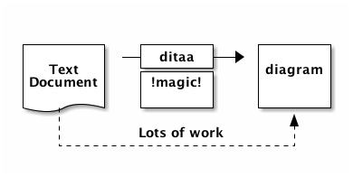
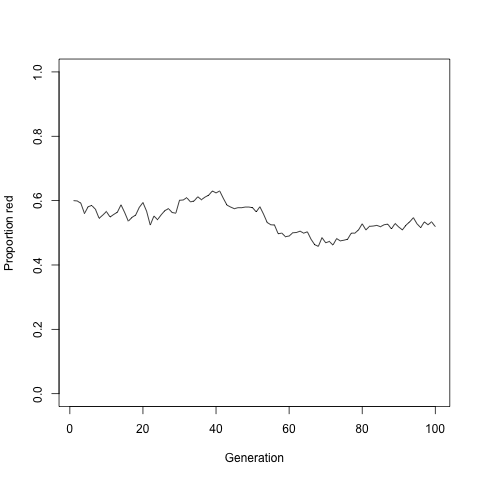

Blog的搭建及其特性
Table of Contents
鹤鸣于九皋，声闻于野。鱼潜在渊，或在于渚。乐彼之园，爰有树檀，其下维萚。他山之石，可以为错。 鹤鸣于九皋，声闻于天。鱼在于渚，或潜在渊。乐彼之园，爰有树檀，其下维谷。他山之石，可以攻玉。 – 鹤鸣
为什么要写博客
刘未鹏 的为什么你应该（从现在开始就）写博客 应该都读过（如果没有，你应该读一下），我们都知道写博客是百利而无一害的，所以我也开始写些东西。
- 强迫自己去深入思考
- 记录自己的想法
- 能够交到和你有相同兴趣的人
我这里使用的Org mode而不是用markdown来写的文章，原因很简单：
- 喜欢Emacs
- 因为记笔记现在都用Org，当然写博客也要用
- Org mode更加的强大
- 写Latex更加的方便
如何搭建这个博客
关于如何去使用，可以参考Publishing Org-mode files to HTML。 其中我也参考了很多人的博客：
- Dennis Ogbe
- Emacs Org-mode 生成 HTML CSS 配置
- Automated Publishing Pipeline with Org Mode
- 为什么用 org-mode 写 blog
- Blogging with Emacs
- Nicolas Petton
需要编译生成html文件时，运行如下的命令M-x org-publish-all如果要发布到github, 运行M-x compile,会调用 public_html下的makefile文件， 这一步会将项目自动commit, 然后push到github。 下面是makefile, 非常简单。
pub_date = `date +'%y.%m.%d %H:%M:%S'` messages = "Auto published by yydai at $(pub_data)" publish: @echo "======================================" @echo "Begin publish the site, please wait..." @echo "======================================" @git add . @git commit -m $(messages) @git pull @git push origin @echo "===============Success================"
这里我后来有写了几个函数(代码)，包括：
- blog preview 会自动publish当前或者所有的blog，并且在浏览器打开当前的blog。
- publish site 会自动commit，push当前的改动到github。然后打开个人blog网站。
- create new blog 创建一个新的blog，并插入模板。
增加了评论的功能，具体可以看 一个静态评论系统的实现。
Org mode
*粗体*粗体/斜体/斜体+删除线+删除线_下划线_下划线H_2下标： \(H_2\)E=mc^2上标： \(E=mc^2\)- 等宽字：
=git=或者~git~
Latex
数学公式主要使用的是MathJax, 我们可以在这里 和 这里 了解小使用的方法。 如果你要写Latex，但却不知道一个符号对应的symbol, 这个 网站能很方便的解决这个问题，只要你能画出来。 下面举几个例子：
- α, β and γ.
- When \(a \ne 0\), there are two solutions to \(ax^2 + bx + c = 0\) and they are
\[x = {-b \pm \sqrt{b^2-4ac} \over 2a}.\]
- \[\sum\limits_{i=1}^n(单项评分_i * 权重)\]
- \[ \frac{1^p+2^p+\cdot\cdot\cdot+n^p}{n^{1+p}} \]
- I am \(op_1\stackrel{abc}{\longrightarrow}op_2\)
- \[Y=\left\{ \begin{aligned} +1 & , & if & & X \geq \theta \\ -1 & , & if & & X < \theta \end{aligned} \right.\]
- a_{1}
- ♥
- \[ \begin{matrix} 1 & x & x^2 \\ 1 & y & y^2 \\ 1 & z & z^2 \\ \end{matrix}\]
- \[ \left[ \begin{array}{cc|c} 1&2&3\\ 4&5&6 \end{array} \right] \]
- \begin{align} product & ⇐ counter * product\\ counter & ⇐ counter + 1 \end{align} 这里用到了 &， 可以让公式在箭头处对齐。
代码高亮
这个博客完全是使用的Org，其中的配置如下：
;; -n 可以显示行号 (require 'org-publish) (setq org-publish-project-alist '( ("blog-notes" :base-directory "~/org/blog/" :base-extension "org" :publishing-directory "~/org/dayigu.github.com/" :recursive t :publishing-function org-publish-org-to-html :headline-levels 4 :section-numbers nil :auto-preamble t :auto-sitemap t ; Generate sitemap.org automagically... :sitemap-filename "sitemap.org" ; ... call it sitemap.org (it's the default)... :sitemap-title "Sitemap" ; ... with title 'Sitemap'. :author "dayigu" :email "dayigu at gmail dot com" :style "<link rel=\"stylesheet\" type=\"text/css\" href=\"css/worg.css\"/>" ) ("blog-static" :base-directory "~/org/blog/" :base-extension "css\\|js\\|png\\|jpg\\|gif\\|pdf\\|mp3\\|ogg\\|swf" :publishing-directory "~/org/dayigu.github.com/" :recursive t :publishing-function org-publish-attachment ) ("blog" :components ("blog-notes" "blog-static")) ;; ))
表格
#+CAPTION: Books #+LABEL: tbl:table1 | 书名 | 类型 | 价格 | |--------+------+-------| | 你好啊 | 文学 | 12.33 | | Python | IT | 44 | | Java | IT | 55 |
| 书名 | 类型 | 价格 |
|---|---|---|
| 你好啊 | 文学 | 12.33 |
| Python | IT | 44 |
| Java | IT | 55 |
| Start Date | End Date | Duration | |------------+------------+----------| | 2004.08.07 | 2005.07.08 | 335 | #+TBLFM: $3=(date(<$2>)-date(<$1>))
来计算平均数
| Student | Maths | Physics | Mean |
|---|---|---|---|
| Bertrand | 13 | 09 | 11 |
| Henri | 15 | 14 | |
| Arnold | 17 | 13 |
这里我们在11这个位置，输入 :=vmean($2..$3), 回车。下面出现一个公式
#+TBLFM: @2$4=vmean($2..$3) 。这里的@2代表第二行，$4 代表第二列。
这里我们可以按 C-c } 来确定表格的行和列位置。
例子： 这里我们可以自动生成 Email 而不用手动输入, 按 C-c C-c就可以执行。
| First Name | Last Name | Email | |------------+-----------+--------------------| | Jone | Doe | Jone.Doe@emacs.edu | | Ying | Dai | Ying.Dai@emacs.edu | #+TBLFM: $3='(concat $1 "." $2 "@emacs.edu")
更多的用法，我们可以看这里： The spreadsheet
将一块区域中文本转化为表格
例如下面的，选中一个区域，然后按下 C-c |,
some, comma, separated, values
就会变成
| some | comma | separated | values |
移动行和列
例如下面的表格
| 1 | 2 | 3 |
| A | B | C |
| a | b | c |
我们可以按住 M-(up dowm left right)， 来进行移动。
增加新的行和列
我们可以通过 S-M-(down right)，来操作。
图像

脚注
在 org mode 中，你可以为你的文章添加注脚（footnote）。注脚的格式有两种，一是方括号+数字，二是方括号+fn+名字, 例如 [fn:3] 。比如下面有两个例子：在 org mode 的正文中写下这两句话：
写好以后，使用 C-c C-x f 来生成 Footnotes.
画图
ditaa
Ditaa is a small command-line utility written in Java, that can convert diagrams drawn using ascii art.
在Emacs中可以使用 artist-mode 来画图。
#+BEGIN_SRC ditaa :file ~/workspace/blog/org/img/ditaa.png
+--------+ +-------+ +-------+
| | --+ ditaa +--> | |
| Text | +-------+ |diagram|
|Document| |!magic!| | |
| {d}| | | | |
+---+----+ +-------+ +-------+
: ^
| Lots of work |
+-------------------------+
#+END_SRC
结果：

R
#+name: simpledrift(N=1000, X1=600, ngens=100)
#+begin_src R :file ~/workspace/blog/org/img/orgmode-babel-R1.png :var ngens=100 X1=600 N=1000 :results graphics
p <- numeric(ngens)
p[1] <- X1/N
for(g in 2:ngens)
p[g] <- rbinom(1, size=N, prob=p[g-1]) / N
plot(p, type="l", ylim=c(0,1), xlab="Generation", ylab="Proportion red")
#+end_src
结果：

Shell
#+name: directories #+begin_src sh :results replace cd ~ && du -sc * |grep -v total #+end_src
结果：
| 888 | Applications |
| 212608 | Desktop |
| 200 | Documents |
| 7476688 | Downloads |
| 112 | IdeaProjects |
| 29996728 | Library |
| 0 | Movies |
| 144 | Music |
| 0 | News |
| 1313344 | Pictures |
| 0 | Public |
| 16 | ditaa.png |
| 8 | header.html |
| 8 | notes.org |
| 8 | org |
| 45744 | workspace |